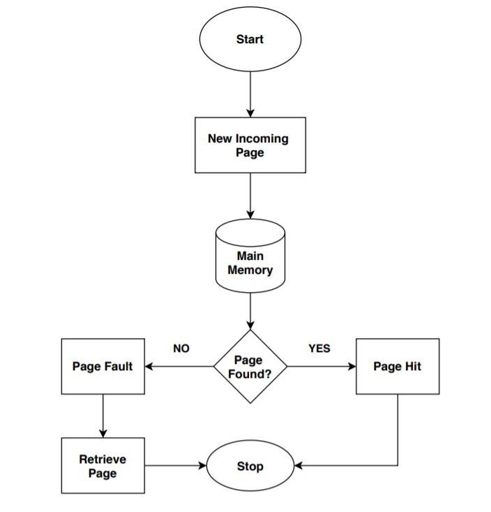
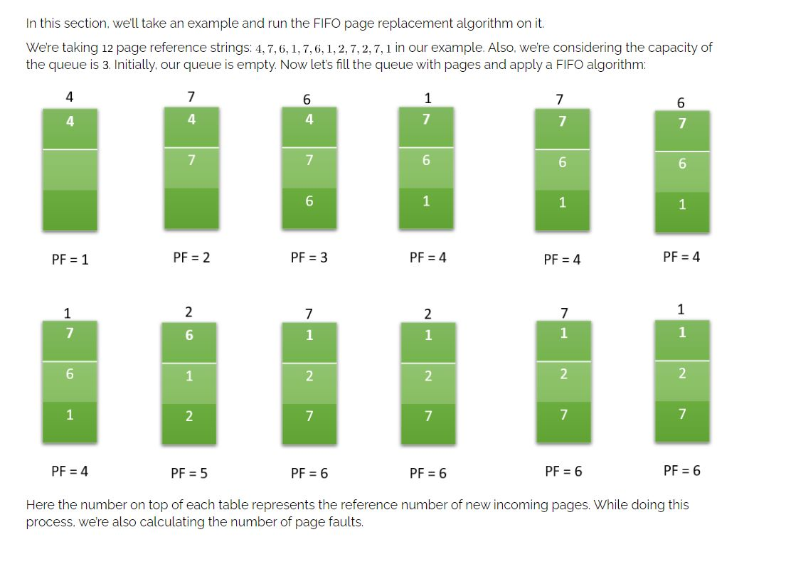

This is the first basic algorithm of Page Replacement Algorithms. This algorithm is basically dependent on the number of frames used. Then each frame takes up the certain page and tries to access it. When the frames are filled then the actual problem starts. The fixed number of frames is filled up with the help of first frames present. This concept is fulfilled with the help of Demand Paging.
This algorithm replaces the oldest page in memory when a page fault occurs. It keeps track of all pages in memory in a queue and when a page fault occurs, the page at the front of the queue is removed and a new page is added to the back of the queue.

Flow Chart of FIFO

Example of FIFO
Advantages & Disadvantages :
The main advantage of the FIFO page replacement algorithm is its simplicity. It is easy to understand and implement. It also uses a queue data structure. The number of operations is limited in a queue makes the implementation simple.
Let’s talk about some disadvantages now. When the number of incoming pages is large, it might not provide excellent performance.
When we increase the number of frames or capacity to store pages in the queue, it should give us less number of page faults. Sometimes FIFO may behave abnormally, and it may increase the number of page faults. This behavior of FIFO is called Belady’s anomaly.
In FIFO, the system should keep track of all the frames. Sometimes it results in slow process execution.